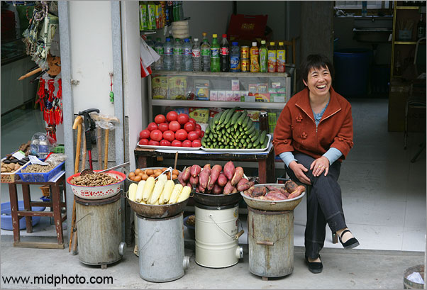
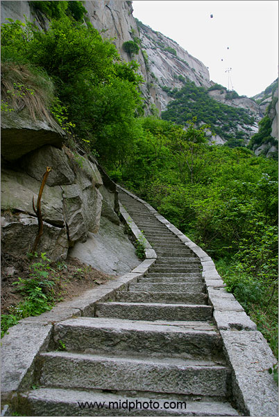
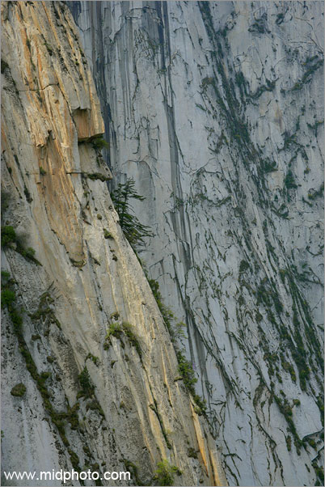
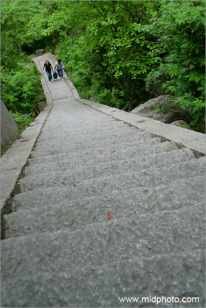
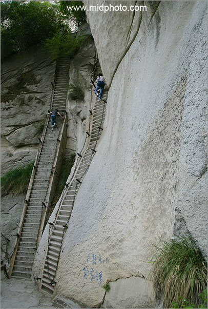
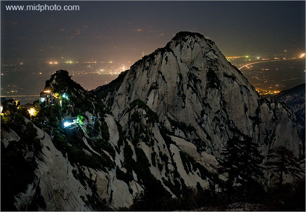
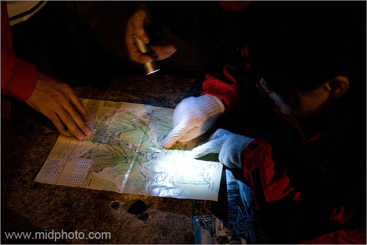
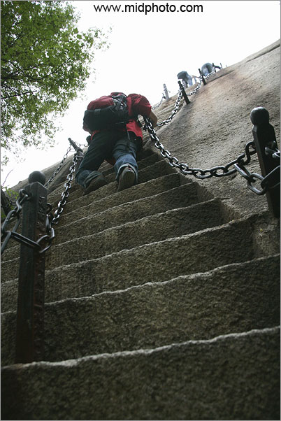
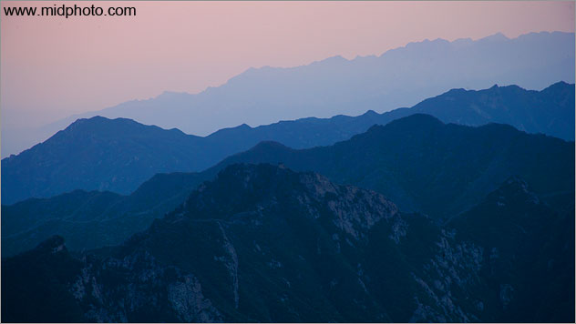

| www.midphoto.com Photographs and writings of Yang Fei | ||||||||||||||||
| Home / China Specials / Shanxi / Mt. Hua | ||||||||||||||||
| www.midphoto.cn 杨飞的摄影和写作 | ||||||||||||||||
| 首页 / 记录中国专题 / 陕西 / 华山 | ||||||||||||||||
|
|
||||||||||||||||
| Mountain Hua by Night, Shan-xi, China | ||||||||||||||||
| 鸡飞蛋打华山之夜 （中国陕西） | ||||||||||||||||
|
2007年4月26日比较忙，上午参观兵马俑，饭后直奔华山。华山离西安市约有一百公里，到达山脚已是下午4点。计划是今晚登山，明早看日出后下山。 门票人民币一百元，加上进山必须要坐山里的交通车往返，这样门票就是每人120元，不便宜。同行的Ella是香港著名业余旅游拍照人士，我们从本世纪初就在电话联系，但此次在西安才第一次接头。我很愿意和美眉同行，但关于怎么上山很快就有了争执。卖红薯的阿姨说走去南峰有3999级台阶，一般需要两到三个小时，Ella要坐索道，十分钟就能到 北峰。为了拍照兼省钱， 我坚持走路上去。
 卖红薯的阿姨说走去南峰有3999级台阶。Photo ID: v8h8072
我要走的这条路就是著名的智取华山道。我小时候是看着这电影长大的。王小波曾说文革期间只有三战一哈四部电影看，地道战地雷战南征北战，以及西哈努克亲王在中国。王小波说的不全对，我记得智取华山也放映过N次。我很耐心的跟Ella解释了中国人民解放军1949年是如何发挥革命的大无畏精神，硬是在自古一条道的华山挖地三尺，悬崖边上找出了第二条道，神兵天降打垮了盘踞在华山顶上的国民党反动派，解放了陕西，解放了全中国，1997年还解放了香港。Ella虽然1997年后也算中国人，但她没看过这部著名的电影，不论我怎么解释，她还是不能理解我对智取华山的感情，眼睛始终对着缆车发呆。我没有办法，说Ella你坐缆车上，在山顶买瓶可乐等我。Ella想了一下说算了，我还是和你一起走吧。
 智取华山道和远处的缆车。Photo ID: v8h8083
很快我就后悔了。无穷无尽的台阶，非常陡峭，一刻钟不到就把我走得头晕眼花，这什么时候是个尽头？2003年夏天攀登穆士塔格雪山求生不得求死不能的感觉仿佛又回来了，可这里海拔还不到一千米啊，妈的没想到自己老得这么快。Ella自重轻，很快就走在了我的前面，不时地要停下来等我，还一边问：David，我听说你是中国的一级登山运动员？我说那是，没看见我现在主要任务是拍照吗，摄影师要找角度，走得慢。 半小时后转过一个路口，看见Ella坐在台阶上喝着可乐等我，神态超优雅，我顿生强烈欲望，这欲望如此强烈以至于我不顾脸面的建议道：Ella你累不？还没走多远，不然我们下山去坐缆车把，天色不早了。Ella说不累，赶紧接着走吧。我打断牙往肚里吞只得继续走路。
 华山。图片号：V8H8547
此时已是下午五点多，寂静的山路，无尽的台阶，除了Ella和我，连个鬼都没有，偶有几声鸟叫，山谷愈发空荡，空生几分恐怖。要是天黑之前走不到北峰那就糟了，这么陡的山路，晚上会不会要了我的命。远远的好像有人说话？不一会儿一对小夫妻由远而近，哈总算有同盟军了。 华山有东西南北四峰，刚才问了下山来的清洁工，说看日出的最佳地点是东峰，从最矮的北峰（海拔1500米）到东峰还要走一个半小时，东峰海拔2000米。此时快六点了，眼见天色已晚，我问这对小夫妻今天目的地何在，荒郊野外的有人同行那是最好。小夫妻说我们也不知道，走到哪算哪吧。晕，也是一个没主的。

我很愿意和这对小夫妻同行，看人家那么亲热，我们四人看起来好似两对小夫妻哦，我一直盘算如何蹭Ella的豆腐也多了分底气。但问题是这对小夫妻体力超好，不一会儿就跑得没影了。 转过山口到了一小卖点，哈原来Ella和小夫妻都在这等我。继续出发，一抬头看见80度垂直的阶梯，不由得倒吸一口凉气。华山天险果不其然。但这对小夫妻面对天梯毫无惧色，一人走一条还互相比谁爬得快。Ella也跟了上去。那我还能怎么样，硬着头皮上吧。
 抬头看见80度的阶梯，倒吸一口凉气。
此处省略一千字。下午四点半出发，克服艰难险阻攀登了N条垂直阶梯，晚上七点半我们终于到达海拔1500米的华山北峰。此时天已全黑。虽然我爬得最慢，但这是一个很不公平的竞走，我的摄影包内有两台相机四个镜头，数码伴侣以及滤镜附件一堆，外挂三角架，还有两瓶水和食物，全套装备连包一起十几公斤。如果把包扔在西安只带一个小数码傻瓜机，老夫我不见得会输。 店家都很热情的招呼我们就在北峰过夜，这里有旅馆，也有军大衣和帐篷出租，说明天凌晨5点出发，六点多就能到东峰看日出。那对小夫妻决定在北峰租帐篷过夜。我也有点想，因为实在是累了。我并建议道就像他们一样租双人帐篷，比较便宜，最关键的，这帐篷很小，我一翻身就多少能占点便宜哈。但明天早上能否在六点日出之前赶到东峰是个大问题， 我们在华山只有一个早上，万一误了日出那不白来了吗？难道要三点半就起来赶夜路？同是赶夜路为什么不赶上半夜的？ 最后我和Ella决定继续前进，到东峰坐等日出。店家都劝我们别走，说天黑路险意外难免，前面还有一个非常危险的铁天梯，而且东峰的住宿很贵。不管了，上路再说。 天色基本上可以用黑窟隆咚来形容，勉强一点月光还时常被云层遮挡，我手里只有一个萤火虫般的微型LED小手电。很多地方都是只容一人侧身而过的山脊险道，两边悬崖万丈，稍有闪失就一了百了。不孝有三无后为大，我心里确有几分后悔。
 深夜华山北峰和远处的华阴县城。图片号：V8H8310
深夜山道虫声嘘唏，月光朦胧鬼影幢幢，松涛时而哗哗时而轰鸣，寒意参着一丝恐惧袭了上来。我和Ella深一脚浅一脚的埋头赶路。人生难得此种奇特体验。月光之下恍惚之中，Ella终于开始顶不住了，越来越慢。我赶紧上前拥住她说： 同志，前不挨村后不着店这里没人能救我们，顶住，一定要走到东峰。妈的，我自己其实也将近极限，但我毅力比较好，头脑始终清晰，这里是华山天险，我尚无后代，绝对不能一了百了。 本来以为Ella和我将是今晚华山之巅的孤独行者，幸运的是途中我们遇到了两位福建男士，也是决定连夜上东峰的。这两位体格健壮，非常大方且乐于助人，不但和我们分享食物，还帮Ella背包，使她得以轻装继续前行。从此我们四人一路保持了良好的队形。这位年轻的福建兄弟一路还幽默着，说今生华山仅此一次，下回就是在山顶放十万块钱他也不再上来了。这两位是跑遍全国做建材的，生意人就是有钱哪。我觉得两千元就能让我明天再上华山 - 坐缆车。 夜里十点左右，我们来到了传说中的华山天梯下面。抬头仰望黑暗中一道绝壁90度垂直，壁上竖着一钢管梯子，约有30米之高，两旁的扶手油光蹭亮，黑暗中闪着寒光。这和珠穆朗玛的中国梯子类似，如果从中国一侧的珠峰北坡攀登，海拔8500米处有一绝壁乃必经之路，中国人1975年在这里架设了一铝合金材质的梯子，曰中国梯子。华山此梯不同在于海拔只有1900米且材质为全钢。
 打开地图查看，原来还有一条路可以绕过天梯。图片号：V8H8318
在这梯子下面我们都有点发愣，险，实在是险。这里离东峰不远了，刚才遇到三位小妹，她们大半夜的居然下山，不可理喻。现在我明白了，她们可能是不敢上这天梯，往下撤十五分钟也有一旅馆可休息。打开地图查看，原来还有一条路可以绕过此梯，但黑灯瞎火的搞不清楚到底怎么走，万一摔下去怎么办。根据理论，此梯虽险，但一定是去东峰的最短线路。绕远路掉下悬崖喂狗很不值得，天梯意外的名声较好。 早死早超生，我们决定摸黑爬天梯。上！ 两位福建兄弟先上了，Ella也上去了。 为防止意外，我们都隔开了相当距离，等前面的人完全上顶了下一个人才出发，万一前面的摔下来，后面几位被砸下去肯定一起完蛋。我目送着他们的背影一个一个消失在黑暗之中。背影都消失完了，我也只好硬着头皮上了。 万分的小心十分的慢，一步一抬腿，脚落定了手才移动，胸部都快贴到梯子上了，可见几乎垂直。绝不敢往下看，也看不见啥。爬到一半一阵大风袭来，松涛轰鸣， 仿佛梯子也有些晃动，我要晕死！我不敢再动，就挂在梯子上休息一下。但梯子的扶手冰凉，我没有手套，手指几乎冻僵。不能休息，赶紧上吧。因为我很害怕梦想成真：我的内心深处有一种强烈的欲望：现在只要一松手，立刻下去成为肉饼，山下人间的一切烦恼都没了。挂在梯子上我以顽强的毅力和松手飞天的欲望进行着强烈的抵抗，就好像在酒店房间里我必须顽强抵抗Ella在浴室里的哗哗水声。 好歹安全上去了，双手已经类似冰棍。本人从小十分恐高，这次能够成功的爬上天梯我首先要感谢这无尽的黑夜，反正啥也看不见。
 华山之路。图片号：V8H8262
晚上十点半到达东峰，我们四人均已面如菜色。东峰餐厅灯光大亮，原来好多人都在这哪。餐厅早已下班，只有十元一碗的方便面。从下午四点半开始连续六小时攀登，Ella和我早已饿晕，别说十元，就是一百元一碗也得吃。 吃完面条睡觉。只有一个选择：东峰宾馆。此馆虽无星级，但标明是涉外旅馆。但价钱吓我一跳，标间要780元。而且只剩一间了，福建兄年纪较长。那就租帐篷吧，正好近距离安慰可怜的ELla。不料帐篷也没了。还好剩有五人间，只要150元，不错。但仔细一看是每人150，这五人间就是750元。福建兄弟建议说我们四人一起弄个五人间吧。Ella说好，福建兄弟旋即展开三寸不烂之舌讲价钱。虽然口才很好，无奈这里住宿只此一家别无分店，垄断之下无价可谈，最后以每人140元成交。
华山东峰宾馆750元一晚的5人间。图片号：V8H8324
进得房间一看，连洗手间都没有，只有五个木架子床。晕。不过福建兄说去年普陀山佛教节人山人海，每晚一千元还没地方住呢。我一听立刻觉得东峰宾馆很是厚道。不过有一件小事遗憾：本来盘算着晚上在帐篷里有点什么戏的。不过估计也没什么戏，半夜时分Ella露出了资产阶级小姐的本来面目，一会儿说脚脖子崴了疼得厉害，等会儿又说胃疼，我被搞晕了。其实我本人也早已全身酸疼，累得半垮。 感觉没睡一会儿，凌晨5点20闹钟响了。经过短暂的思想斗争，赶紧起来去附近的鹰嘴岩去拍日出。但人算不如天算，一直拍到7点，基本上没有拍到什么东西 - 今天的日出很一般，不好看。
 2007年4月27日华山的日出。图片号：V8H8338
长话短说，看完日出，我和Ella晃晃悠悠的下山了。脚下发飘主要是因为没睡好。昨晚黑乎乎的没拍到什么，本指望下山顺道拍点，没想到今儿上午有薄雾，能见度颇差，也没拍到啥，很是扫兴。本来还想去著名的 南峰长空栈道看看，去不了，Ella看样子是真崴了脚，根本走不动。幸亏没去，西峰下来的几个游客说长空栈道拍照的地方都被照相摊子的人占据，不给钱不让拍。 三小时后晃到北峰索道，我们上缆车一溜烟下山了。 来到山脚的华阴县，上了大巴我美美的睡了两个小时，实在是困。到西安下车发现因为睡得太死，被小偷光顾，手机不见了。Ella很抱谦的说：真对不起我也睡死了， 要不你拿我的手机先用吧。我连忙说不用不用，手机没了正好，我讨厌摄影工作的时候被人打扰。心的话这趟华山真是，照片没拍好，美女没泡到，可谓鸡飞蛋打。不过安全回来了就好，留得青山还在， 还怕没有干柴？ 杨飞， 2007年6月8日 华山专辑图片74张，请点击这里
|
||||||||||||||||
|
|
||||||||||||||||
|
||||||||||||||||